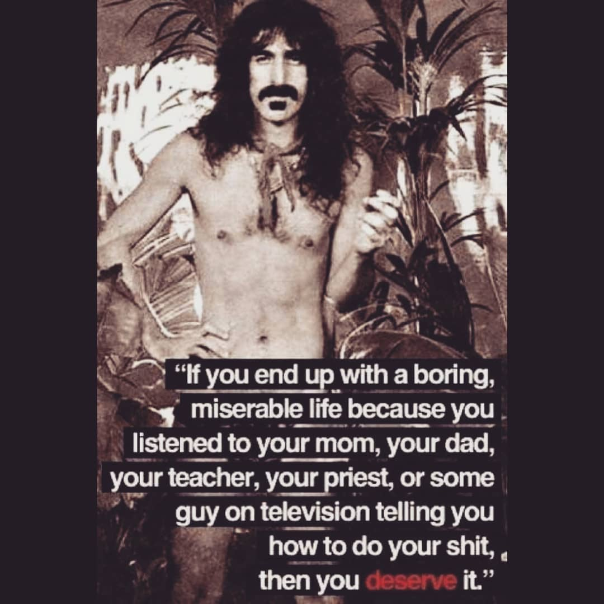

Este refrán proveniente de la Biblia me lo compartió Enrique Díaz Leimbacher, gran profesor, quien me empujó a animarme a escribir y compartir mis ideas y aprendizajes. Resultó ser muy inspiradora para esos momentos donde solo quería abandonar y ceder ante la presión de la mayoría. Este último año aprendí que es clave confiar en uno mismo, sobre todo si a quiénes más uno le importa no lo hacen. A veces uno solo tiene que tener fe en su visión, aunque también es muy importante moverse y relacionarse con personas que ven lo mismo para motivarse mutuamente.
En el siglo XXI de nada sirve un sistema educativo que solo evalúa la memoria. Razonar, pensar críticamente, leer entre líneas y conectar ideas que parecen de universos distantes son las únicas herramientas que pueden llevarnos a donde nadie llegó, aunque eso implique ser marginado, tratado de ingenuo, tonto y obsesivo a lo largo del camino.
Si algo nos demostró el 2020, es que nada es seguro más que nuestra inevitable muerte. ¿Sabiendo que nos vamos a morir, no vamos a intentarlo una y otra vez mientras respiremos? ¿No es mejor morir habiendo intentado dar ese salto, aunque nos caigamos una y otra vez, que haber vivido la vida de otro? ¿Y si estamos en lo cierto?
Cosas maravillosas suceden tarde o temprano si actuamos confiando en nosotros mismos.
Para este 2021, mando un fuerte abrazo a todos los “inadaptados” que no temen tomar un camino distinto ni bajan los brazos persiguiendo sus pasiones,
Martín Morando
Arte: (1) desconocido, (2) @stonetoss, (3) desconocido, frase de Frank Zappa.